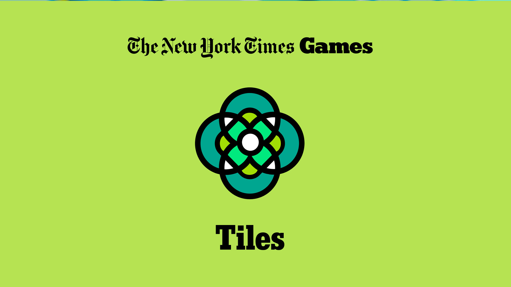
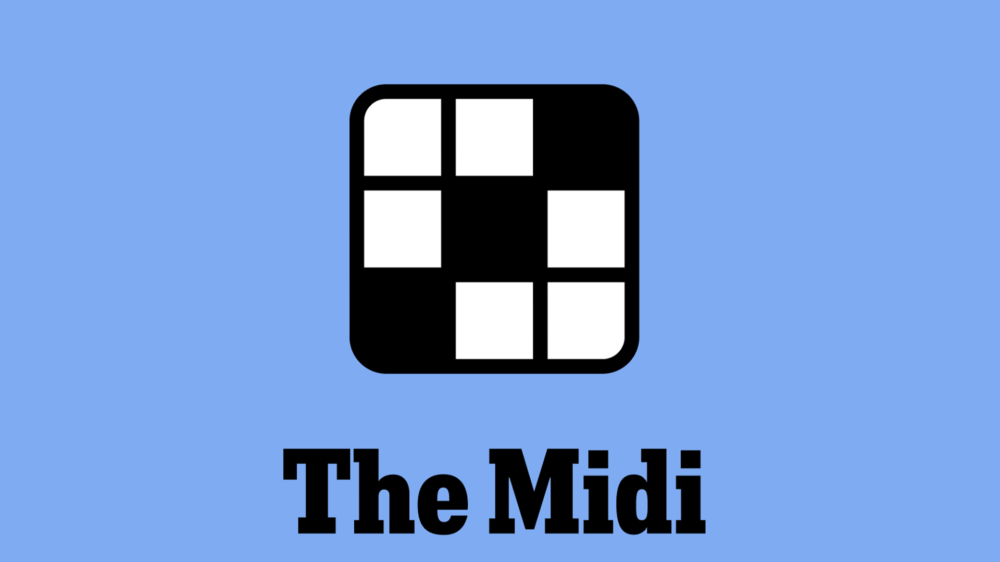
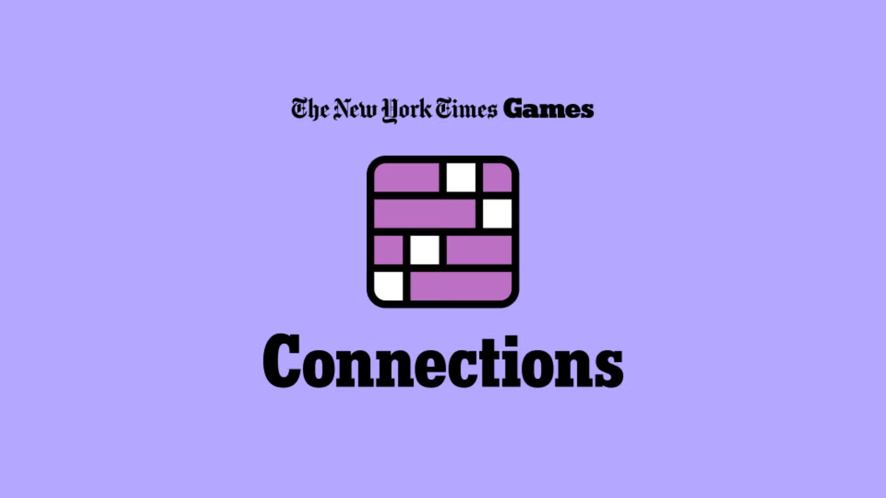
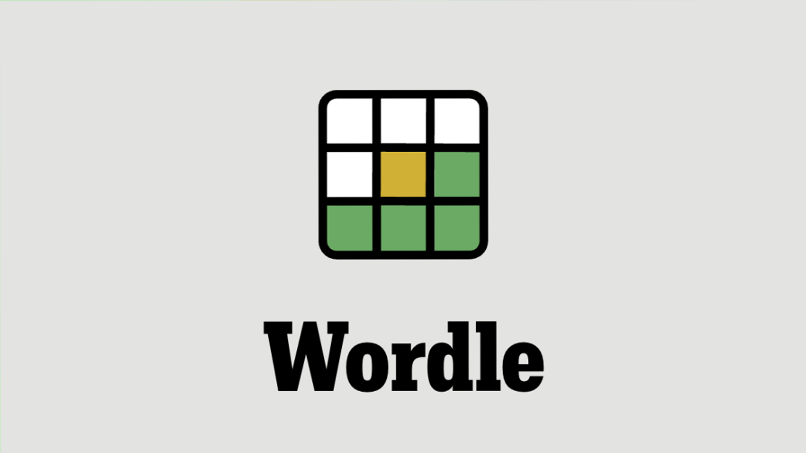
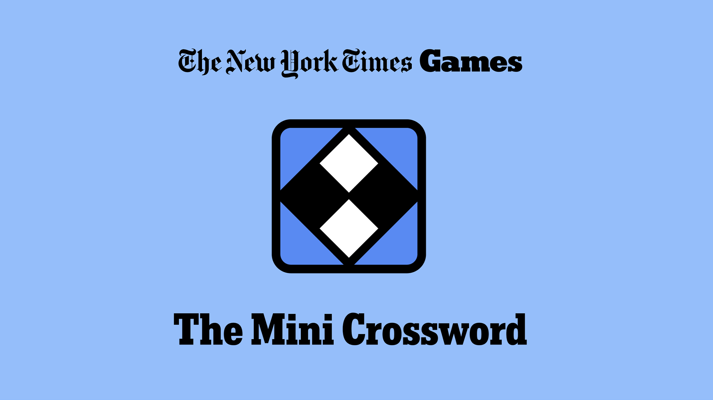

Number six: The Tiles
Staring wildly at matching patterns instead of using actual words. Bottom rank because everyone only finds it by misclicking Wordle anyway.
I have won the Wordle in one guess, and I have played the New York Times Games for years. Here are my six favorites, ranked worst to best.
Start at number sixThe countdown
All of these games are on the New York Times site, and made my top 6 overall.

Staring wildly at matching patterns instead of using actual words. Bottom rank because everyone only finds it by misclicking Wordle anyway.

The awkward middle child for when the Mini is too easy, but you have a job to do. Fifth place because it gives off heavy extra-homework vibes.
A chaotic word-search that makes you hunt for a secret theme word. It lands in the middle because missing a word in plain sight is pure pain.

A delightfully toxic trap designed by sadists to ruin your morning. Third place, purely because making smart people feel dumb is an art form.

The classic group-chat flex that makes guessing five-letter words feel high-stakes. It's second because winning in three tries is an unmatched high.

The best one
Takes 30 seconds and lets you pretend you're a genius before breakfast. It’s number one because it never hurts your feelings.
Method
When ranking my top six games, I judged based on their balance between being challening and enjoyable. For example, my #1 ranked game, The Mini, I ranked so high becuase it is equally fun to complete as it is to work through. This is in contrast to my #6 ranked game, The Tiles, because while it is fun to do, it is also extremely easy.
I decieded to ignore the Crossword and Spelling Bee on my top 6 list. This is because the Crossword ultimately is not something that can be completed daily, and is better for a Sunday off when you have more free time. In terms of the Spelling Bee, I just think that this game is super boring and pointless unless you have a diverse vocabulary, and advanced spelling ability.
The main arugument against the Mini being the #1 game on the New York Times site is that it is now behind a paywall, inaccessible to the average player. However, to that I say just buy a New York Times subcription and diversify yourself on the daily news while you're at it.